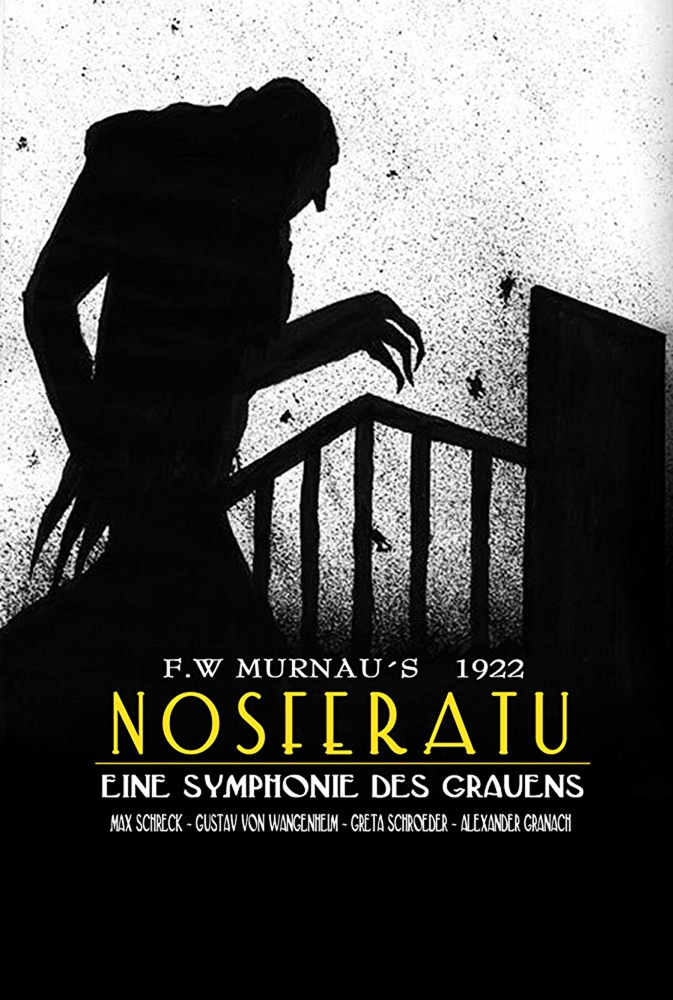

Psicosis
1960
Psicosis
Una secretaria roba $40,000 de su jefe y huye, deteniéndose en el remoto Motel Bates dirigido por Norman, un joven con una relación inquietante con su madre.
Director: Alfred Hitchcock
Duración: 109 min
Género: Terror, Suspense
Reparto: Anthony Perkins, Janet Leigh

El Resplandor
1980
El Resplandor
Jack Torrance acepta un trabajo como cuidador de invierno en el aislado Hotel Overlook, donde la soledad y las fuerzas sobrenaturales lo llevan a la locura.
Director: Stanley Kubrick
Duración: 146 min
Género: Terror Psicológico
Reparto: Jack Nicholson, Shelley Duvall

La Noche de los Muertos Vivientes
1968
La Noche de los Muertos Vivientes
Un grupo de personas se refugia en una casa para protegerse de una horda de zombis que ha comenzado a caminar por la tierra.
Director: George A. Romero
Duración: 96 min
Género: Terror, Zombis
Reparto: Duane Jones, Judith O'Dea

Nosferatu
1922
Nosferatu
El Conde Orlok, un vampiro de Transilvania, se muda a una ciudad alemana donde esparce la plaga de ratas y se obsesiona con la esposa de su agente inmobiliario.
Director: F.W. Murnau
Duración: 94 min
Género: Terror, Vampiros
Reparto: Max Schreck, Gustav von Wangenheim

El Exorcista
1973
El Exorcista
Una niña es poseída por una entidad demoníaca, y su madre busca la ayuda de dos sacerdotes para salvar a su hija a través de un exorcismo.
Director: William Friedkin
Duración: 122 min
Género: Terror Sobrenatural
Reparto: Ellen Burstyn, Linda Blair
Frankenstein
1931
Frankenstein
El científico Henry Frankenstein crea vida a partir de partes de cadáveres, pero su creación se convierte en un monstruo que aterroriza a la población local.
Director: James Whale
Duración: 70 min
Género: Terror Clásico, Ciencia Ficción
Reparto: Boris Karloff, Colin Clive

La Momia
1932
La Momia
Un arqueólogo despierta accidentalmente a la momia de un sacerdote egipcio, quien busca reunirse con la reencarnación de su amada perdida.
Director: Karl Freund
Duración: 73 min
Género: Terror Clásico, Sobrenatural
Reparto: Boris Karloff, Zita Johann

El Hombre Lobo
1941
El Hombre Lobo
Larry Talbot regresa a su hogar ancestral en Gales y es mordido por un hombre lobo, condenándolo a transformarse bajo la luna llena.
Director: George Waggner
Duración: 70 min
Género: Terror Clásico, Licantropía
Reparto: Lon Chaney Jr., Claude Rains

Vampyr
1932
Vampyr
Un joven estudiante de lo oculto se encuentra en un pueblo plagado de vampiros, donde debe enfrentar fuerzas sobrenaturales para salvar a una joven.
Director: Carl Theodor Dreyer
Duración: 75 min
Género: Terror Artístico, Vampiros
Reparto: Julian West, Maurice Schutz